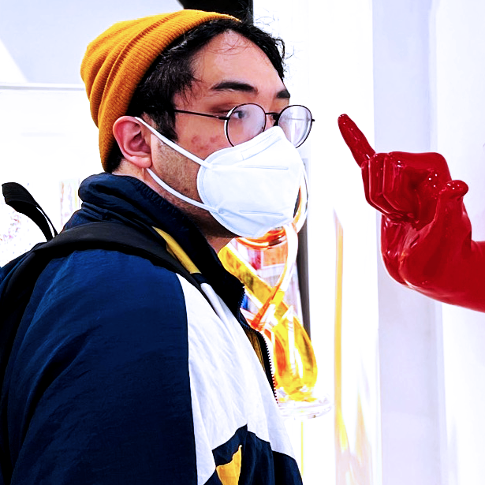
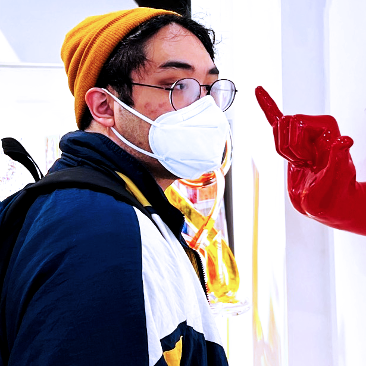
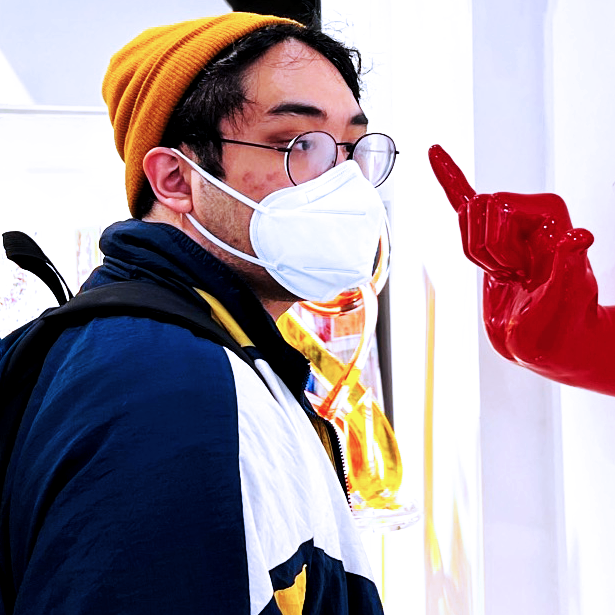
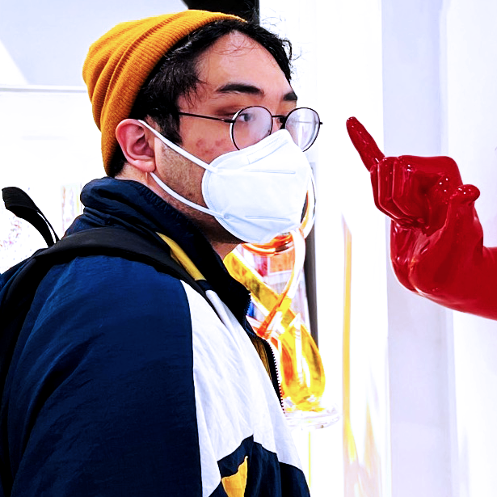

i'm interested in telling stories on the internet in exciting and innovative ways using code. i studied journalism and human-centered design at northwestern university, where i served as editor-in-chief and interactives editor at north by northwestern. currently, i'm a newsroom engineer on the hearst newspapers devhub, where i work on digital projects across hearst's various markets.
you can reach me on twitter @davidmdeloso - i'm always happy to chat about journalism, code, or writing code for journalism.
hover over a project for details.

i designed and developed a longform feature chronicling one man's attempt to process his fiancee's death using an a.i. chatbot.
view full project

i developed the hub pages for lift every voice, a juneteenth project by hearst newspapers which tells the stories of black elders across the country. i collaborated with a central design team to produce a project template which each hearst market could modify and deploy individually.
view full project

for baseball legend willie mays' 90th birthday, i designed and developed a project commemorating his life and career. the animated slideshow can be navigated using arrow keys, a mouse wheel or on-screen buttons.
view full project
i designed and developed an interactive map showing the evanston restaurants are open at any given time. the project pulls data from a csv file which can be updated to easily add or modify restaurant information without directly editing the code.
view full project

i led a team of developers in converting north by northwestern's fall 2020 print issue into a fully-interactive digital magazine. i built the magazine's homepage as well as 18 of its 32 stories in addition to editing and providing feedback on other team members' work.
view full magazine

for a collaboration between north by northwestern's life & style and sports sections, i developed a graphic that replicates the interface of a popular dating app to build a quiz matching readers with iconic moments in northwestern sports history.
read full story
how do you start college remotely? i spoke to incoming northwestern students about their experience finding community virtually after the university announced most of them would not be allowed on campus, and built interactive animated elements using javascript to simulate the experience of opening an email and reading text messages.
read full story

dillo day is the largest student-run music festival in the country, featuring a lineup of celebrity and student performances. in the weeks leading up to the festival in 2019, i organized and developed an interactive guide to the festival, featuring contributions from several members of north by northwestern's entertainment section.
view full project